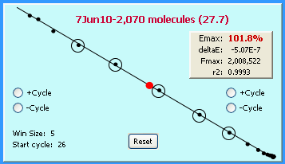

Absolute Quantification: determination of the number of target molecules, based on an absolute quantitative scale generated by a quantitative standard. Using conventional qPCR methods, this requires construction of a target-specific standard curve, as compared to LRE in which absolute scale is determined by optical calibration using lambda gDNA as a universal quantitative standard.
Amplicon Database: is a database file with a *.amp extension that stores amplicon information
Amplification profile: is the fundamental unit of real-time PCR in which the increase in amplicon DNA is determined by measuring reaction fluorescence at the end of each cycle. Also referred to as the FC plot, an amplification profile is generated by plotting reaction fluorescence against cycle number.
Average F0: target quantity expressed in fluorescence units, produced by averaging the cycle F0 values generated by the cycles within the LRE window.
Average Profile: an amplification profile generated by averaging, for each cycle, the fluorescence readings from the corresponding replicate profiles to produce a "average" amplification profile. Average profiles are automatically constructed by the LRE Analyzer during data import. Although this can greatly increase the read precision that in turn increases the precision of target quantification, it does assume that the respective replicate profiles are tightly clustered. This approach becomes less effective if the replicate profiles are scattered. An extreme example of this occurs when target quantities fall below 10 molecules per reaction due to the impact of Poisson Distribution. Under such situations, target quantity should be determined by averaging the quantities produced by each individual replicate reaction. A detailed description of the impact of Poisson Distribution is presented in the third video of the LRE Overview presented on the LRE qPCR website (sites.google.com/site/lreqpcr).
Average Replicate-F0 CV: is an indicator of the overall precision of target quantification, based on the variation (CV) of F0 determinations generated by the technical replicates contained within either an Experiment or Calibration database
C1/2: the fractional cycle at which reaction fluorescence reaches half of Fmax (which roughly corresponds to the middle of most amplification profiles) and is primarily used to define the position of an amplification profile, similar but not identical to that of Cq (AKA Ct and Cp).
Calibration Profile: an amplification profile generated by amplification of a known quantity of lambda genomic DNA, from which an optical calibration factor is generated.
Calibration Database: is a database file with a *.cal extension, containing calibration profiles generated by the same reaction setup
Cycle Efficiency: generally referred to as EC, defines amplification efficiency as the increase in amplicon DNA quantity produced over a single cycle, relative to the amount of amplicon DNA present at the beginning of the cycle. For real-time PCR using SYBR Green I, the amount of amplicon DNA present at the end of a cycle is reflected by the fluorescence reading generated by that cycle (FC), whereas the amount of amplicon DNA present at the beginning of the cycle is reflected by the fluorescent reading produced by the previous cycle (FC-1). Cycle efficiency, which is normally expressed as a percentage, is calculated by dividing the these two values:
Cycle FC: the reaction fluorescence generated at the end of the cycle, which with SYBR Green I detection is proportional to the amount of amplicon DNA.
Cycle F0: is the target quantity derived from the cycle's fluorescence reading (FC), calculated using a derivative of the classic Boltzmann sigmoid function:

ΔE: or "deltaE" is the rate of loss in amplification efficiency, determined from the slope of the LRE plot.
Emax: the maximal amplification efficiency, determined by the Y-intercept of the LRE plot and is equivalent to the amplification efficiency as defined by the slope of a standard curve used in conventional qPCR.
Experiment Database: is a database file with a *.exp extension, in which a group of related runs are stored, along with their associated sample profiles
FC Plot: a plot of the cycle FC generated by an amplification reaction vs. cycle number (generally referred to as the "amplification profile" or profile for short) that in the LRE analyzer also includes the predicted cycle FC generated by the LRE model.
Fmax: the maximal reaction fluorescence that defines the predicted top of an amplification profile, which is also referred to as the plateau phase, and can be calculated using this equation:

F0 Threshold: expressed as the percent difference from the average F0, the F0 threshold is used to determined if a cycle should be included into the LRE window, based on comparing its cycle F0 to the average F0.
High Quality Profiles: are profiles generated with good read precision and amplification kinetics that conforms well to the LRE model. The performance of the primer pair is another key parameter that impacts both the repeatability and accuracy of target quantification.
LRE Analysis: the process of generating values for the two parameters the govern PCR amplification (ΔE and Emax) by applying linear regression analysis to the LRE Plot.
LRE Model: based on the assumption that reaction fluorescence (FC) is proportional to amplicon DNA mass, PCR amplification can be modeled using the equation:

Derived by adapting the classic Boltzmann sigmoid to PCR, this allows the conformity of an amplification profile to be assessed, which among other things, can reveal aberrant amplification kinetics.
LRE Plot: a plot of cycle efficiency (EC) vs. reaction fluorescence (FC) that generates a linear representation of an amplification profile:
The LRE Plot

LRE originated from the ability to define the kinetics of amplification by applying linear regression analysis to the LRE plot, using the equation:

LRE Window: consists of a contiguous group of cycles within the central region of an amplification profile that is used for LRE analysis.
Minimum FC Setting: used for automated LRE window selection in which the first cycle that generated a FC above the specified minimum FC is designated as the start cycle. If not specified the first cycle below C1/2 is designated at the start cycle.
M0: the DNA mass of the amplicon region within the target, expressed in nanograms of double stranded DNA. As described in the optical calibration overview, M0 can be converted into the number of target molecules based on the amplicon size.
Optical Calibration: the process of calibrating the fluorescence intensity of an assay by amplifying a known quantity of lambda gDNA to produce a calibration profile, from which an optical calibration factor is derived.
Optical Calibration Factor: or OCF, quantifies the fluorescence intensity of an assay. As described in the optical calibration overview an OCF is used to convert target quantities from fluorescence units to the DNA mass, which based on the amplicon size, is then used to calculate the number of target molecules.
Reaction Setup: encompasses all of the factors impacting the optics of an assay, such as the reaction vessel and closure, the enzyme formulation and the optics of the instrument. As a whole these parameters determine the fluorescence intensity of an assay. A key aspect of implementing absolute quantification is optical calibration in which the fluorescence intensity of an assay is quantified, generating an optical calibration factor that defines the reaction setup used to conduct an assay.
Read Precision: the precision of the fluorescence readings taken the end of each cycle, which is dependent in large part on the optical system of the instrument. Read precision can play a major role in the efficacy of LRE analysis.
Replicate Profiles: profile generated by technical replicate reactions. To increase optical precision, replicate profiles are used to generate an average profile.
Sample Profile: an amplification profile generated from a sample (AKA an unknown).
Start Cycle: the first cycle within the bottom of the LRE window.